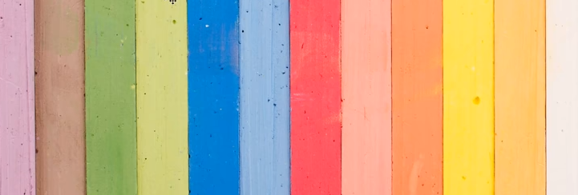
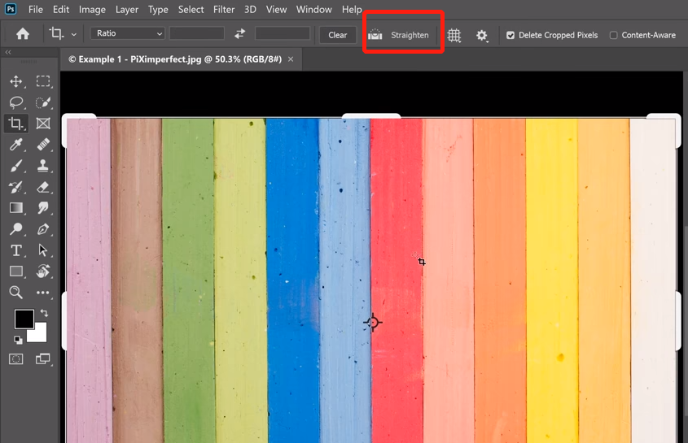
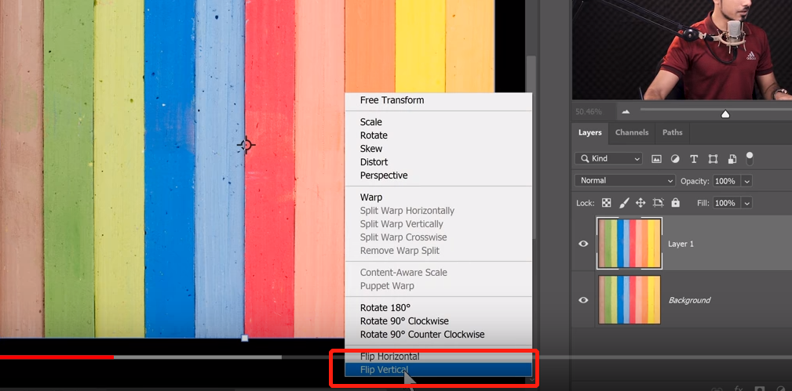
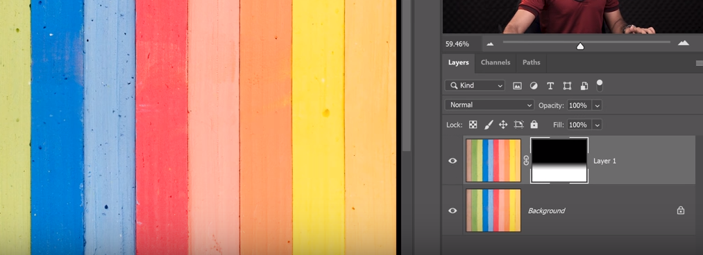
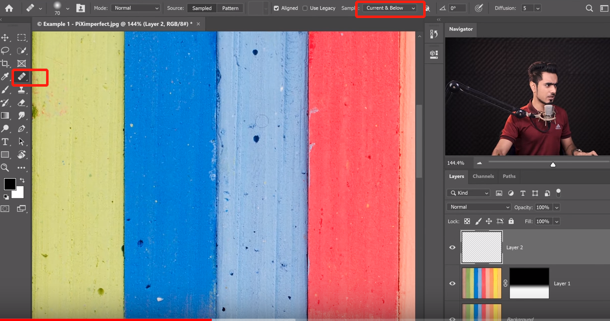
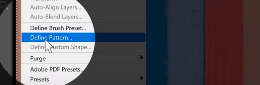
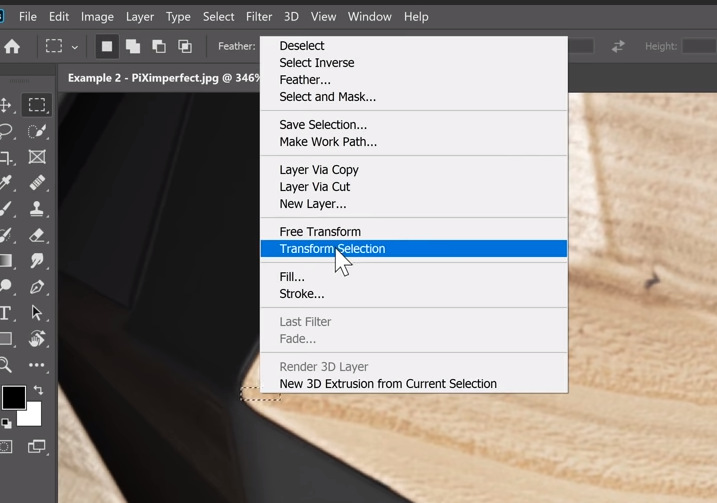
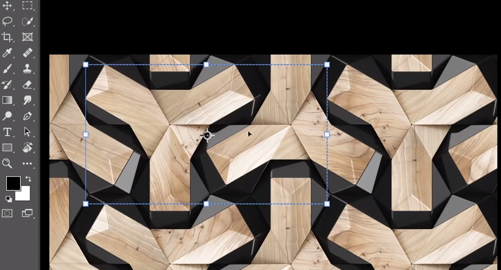
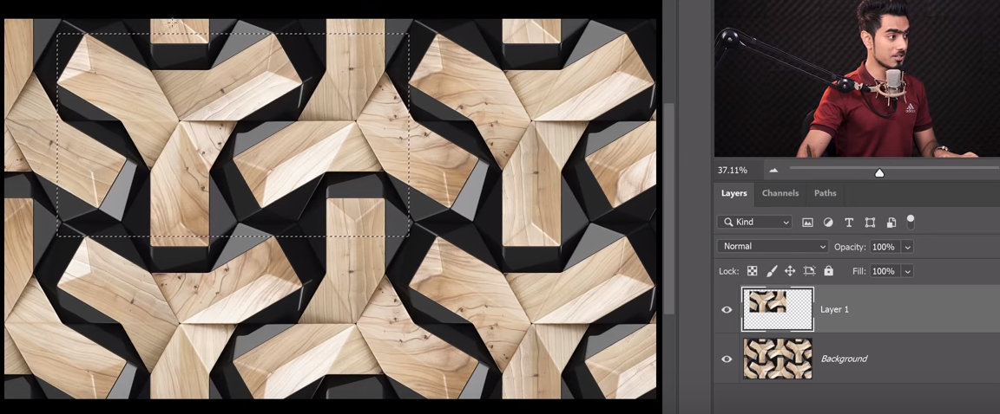
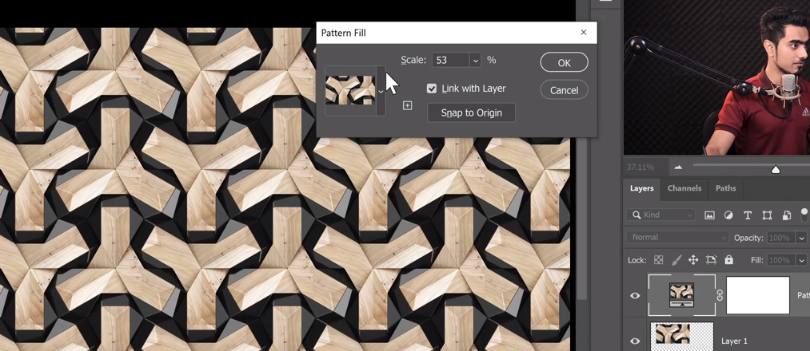

PhotoShop 将图片转换为无缝的 pattern 图形
示例1

这种类型的图片，需要将上下左右的元素做对齐处理。
选择 filter - other - offset 检查图片：
选择 warp around，调节 x y 轴查看图片对接情况：
经过查看，垂直方向竖线没有对齐，左右需要裁剪，首先将图片大概做对齐处理，使用剪裁工具，确保 delete cropped pixel选中：

再次使用 offset 工具查看对齐情况，上下依然有偏移：
需要将上半部分复制到下面，复制图层，上下颠倒新图层，使用渐变工具和蒙版只保留下半部分：


新建图层，使用污点修复工具，将上下相同部分的标记去掉：

盖印图层，CTRL+A 全选图层，建立 pattern，选择 edit - define pattern：

新建 pattern 图层，测试建立的 pattern，减小 scale 拖动图层，查看是否图像是连续的：
示例2

这种类型的图片，需要将一个完整的单元复制出来。
选区工具选择一个单元的起始角落：
右键选择 transform selection，选择出完整的一个元素：


CTRL+J 复制选择的图层，按住 CTRL 点击新图层，建立 pattern：

建立 pattern 图层，测试新建立的 pattern：

示例3

这种类型的图片，使用 offset 将边缘部分做填充处理。
使用 offset 检查图片，调节水平垂直控制，将边缘部分移动到中间，点击 ok 确认：
选区工具，将中间交叉部分选中：
选择 edit - content aware fill 填充：
建立 pattern，测试效果。